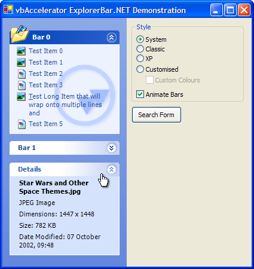
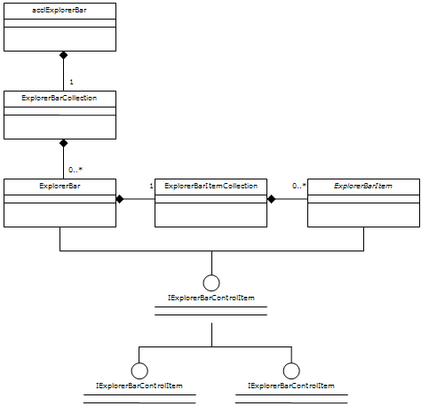
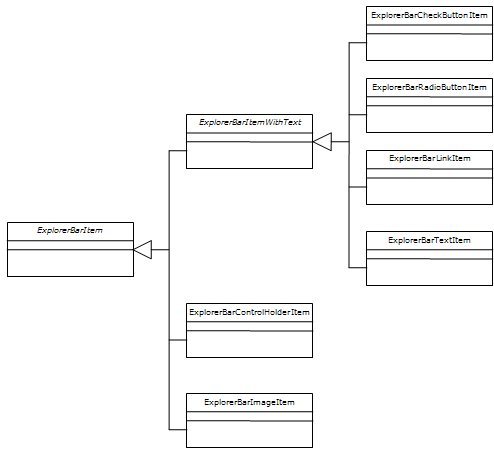
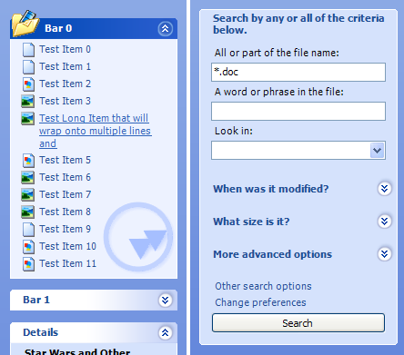
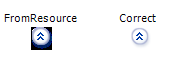

ExplorerBar Control Binary (40K)
ExplorerBar Control Binary (40K)
 ExplorerBar Control Demonstration (47K)
ExplorerBar Control Demonstration (47K)
 ExplorerBar Control Documentation (265K)
ExplorerBar Control Documentation (265K)
 ExplorerBar Control Source Code (201K)
ExplorerBar Control Source Code (201K)
 17 Apr 2004
17 Apr 2004
First Posted
 vbAccelerator Explorer Bar Control
vbAccelerator Explorer Bar Control
 Reading EXIF Tags From JPEG Files
Reading EXIF Tags From JPEG Files

.NET ExplorerBar Control
Create highly customisable XP Style Explorer user interfaces on all versions of Windows
The vbAccelerator .NET Explorer Bar control is a .NET implementation of the VB Explorer Bar Control which provides a user interface like the one in Windows Explorer under XP. You can use it to create handy lists of shortcuts and informational panels, or you can incorporate controls into the panels to provide flexible and configurable complex user interface panels. The code allows you to use the inbuilt XP styles when available or to draw using an emulation otherwise.
About The Downloads
There are three downloads provided with this article.
- The Binary download provides the official vbAccelerator strong-named signed assembly for the control, acclExplorerBar.Dll. This assembly can be registered into the Global Assembly Cache (GAC).
- The Demonstration download uses the signed assembly. You need to have the signed control to run the demonstration; it can either by registed into the GAC or placed into the demonstration executable directory.
- The Source download provides the projects used to develop and release the control. You can copy the ExplorerBar control source into your own project from here, or build your own version if you provide a new strong-name key pair.
The control itself requires permissions to run Unmanaged and Unsafe code. Unmanaged code permissions are needed for the Windows API calls used internally by the control to draw the XP appearance, and unsafe permission is needed for the image processing routines used internally. A simplified version of the control which does not require these permissions is being researched.
Control API
The top level interface of the ExplorerBar control is based around two collections: the ExplorerBarCollection, which maintains the list of bars in the control, and the ExplorerBarItemsCollection, which contains the items held within a particular bar. Bars and items both implement the IExplorerBarControlItem interface, which provides the mechanism by which user actions interact with the objects in the control. This API is shown in the UML diagram below:
Explorer Bar Main Class Model
The ExplorerBarItem class is abstract because there are several implementing subclasses with specific behaviour. There are three main types:
- Items with text and optionally an icon or image. This type is divided into text-only items, hyper-link type items and check and radio buttons.
- Items which hold controls.
- Items which display an image.
The class diagram for items is shown in this UML diagram:
Explorer Bar Item Class Model
Using the Control
This section walks through the control and describes the features, methods and properties of the control. The following areas are covered:
- Adding the Control to your project
- Initialising and Configuring the Control
- Adding Bars and Items
- Responding to Events
1. Adding the Control to your project
If you are using the control binary, then add a reference to acclExplorerBar.DLL to your project. If you use the form designer to draw the form then you'll aslo need to use the Customise Toolbox dialog in VS.NET to pick the control again so it appears in the toolbox, otherwise just declare an instance of the control in your form:
using vbAccelerator.Components.Controls; using System.Windows.Forms; private acclExplorerBar barOptions; barOptions = new acclExplorerBar(); barOptions.Name = "barOptions"; barOptions.Dock = DockStyle.Left; barOptions.Width = 240; Controls.AddRange(new Control[] barOptions);
2. Initialising and Configuring the Control
The ExplorerBar control has two modes: the Default mode, in which each bar in the control has its own single line title and appears distinct from the others, and the Search mode, in which bars all appear in the same container:
Default and Search ExplorerBar Modes
Icons for bars and items are typically sourced from ImageList objects. The TitleImageList specifies the source of icons for the titles of bars in the control, whereas the ImageList property is for the items. The control can display tooltips if you associate a ToolTip with it.
Finally, you can choose the drawing style of the control. This is one of the ExplorerBarDrawingStyle enumerated values:
- System - use the current system style for the bar.
- XP - always use XP style; emulating if necessary.
- Classic - always use classic style.
- Custom - use emulated XP style and allow customised colours.
3. Adding Bars and Items
Adding a bar is performed through the Add method of the control's Bars collection. Normally, you will want to create a new bar and add all of the items to it before adding it to the collection, as this prevents the control performing so many updates (although you can also prevent updates by setting the control's Redraw property). Bars have the following properties:
- Text - the title to display in the bar.
- ToolTipText - text to display in a tooltip when the mouse hovers over the bar.
- IconIndex - an optional index to an icon in the TitleImageList associated with the bar. If this is set the bar will draw the icon at the near-edge of the title.
- IsSpecial - special bars are used to highlight bars in the control and render with different colours. In Windows Explorer this feature is used to highlight specific tasks, for example, image specific tasks in the My Pictures folder.
- Watermark - an optional image to display behind the items in the bar. By default, the control will image process this bitmap so it matches the colours of the bar. This allows you to use any image with low contrast and it will match the control regardless of the colour scheme. However, you can also display it directly using the WatermarkMode property. The alignment of the image in the bar can be modified using the WatermarkHAlign and WatermarkVAlign properties; by default it appears at the bottom far corner of the bar.
- CanExpand - by default bars can be expanded and collapsed, however, you can create bars which are always open by setting this property to false. If you do not set any title Text then the resulting bar will not have a title at all and the items will display from the top of the bar.
- State - gets/sets whether the bar is expanded or collapsed.
Sample code:
ExplorerBar bar = new ExplorerBar(); bar.Text = "File and Folder Tasks"; bar.ToolTipText = "These tasks apply to files and folders you select"; // Add items here barOptions.Bars.Add(bar);
Adding items to the bar is accomplished through the bar's Items property. As with bars, you can create new items, set their properties and then add them to the bar afterwards. As noted before, there are six concrete subclasses of ExplorerBarItem that can be added (and you can derive your own too):
- ExplorerBarLinkItem - an item with text and optional icon that highlights when the mouse moves over and can be clicked.
- ExplorerBarTextItem - same as a link item except the item does not highlight or respond to clicks.
- ExplorerBarCheckBoxItem - same as a link item but displays a check box instead of an icon.
- ExplorerBarRadioItem - same as a link item but displays a radio button instead of an icon. Only one radio item can be selected within an individual bar.
- ExplorerBarControlHolderItem - an item which is a placeholder for any other Control.
- ExplorerBarImageItem - an item which displays a centred Image.
Each subclass has its own properties depending on the capabilities of the item. The most commonly used items are Link items and Text items, which are identical except for the way they respond to user input. These have the following properties:
- Text - the text to display for the item.
- ToolTipText - text to display in a tooltip when the mouse hovers over the bar.
- IconIndex - optional index of an icon to display next to the item from the ImageList associated with the control.
- Font - optional specific font to use for this item. If not specified or set to null the font of the control will be used.
- Bold - if set to true this item will use a bold version of the font when drawn.
- ForeColor and ForeColorHot - properties to override the default text colour of the item. If set to Color.Empty (the default) then the standard colours are used.
Sample code:
ExplorerBarLinkItem item = new ExplorerBarLinkItem(); item.Text = "My Computer"; item.IconIndex = 5; item.ToolTipText = "Shows the disks and harddrives connected to this computer"; bar.Items.Add(item);
The Radio and Check items are very similar, except they have a Checked property rather than an icon index.
Control holder items have only one property: Control. Setting this property will cause the control to be made a child of the ExplorerBar control. Note that it will also disable animations if the bar is expanded or collapsed, since the current Windows implementation does not efficiently allow animations of Windows.
Image items also have only one property, the Image. Although an Image item will scale the image to fit the available space in the bar, for performance you should create a thumbnail for large images first and then assign that to the control (this task can also be performed on a background thread for performance; see Reading EXIF Tags from JPEG files for a sample which does this).
4. Responding to Events
There are three events that you'll probably be interested in responding to for the control:
- BarClick, raised when bars are clicked.
- ItemClick, raised when items are clicked.
- NonBarClick, which is raised when any other area of the control is clicked.
When responding to the ItemClick event, if you use different types of items in the control you can either choose to use a single event handler and check the type of the item that is being clicked, or (possibly more elegantly) use different event handlers for the different types:
...
barSearch.ItemClick += new ExplorerBarItemClickEventHandler(barSearch_ItemClick);
...
private void barSearch_ItemClick(
object sender,
ExplorerBarItemClickEventArgs e)
{
// Check type of item that has been clicked:
if (typeof(ExplorerBarRadioButtonItem).IsAssignableFrom(e.Item.GetType()))
{
// Perform radio button check processing
}
}
Implementation Notes
There were a number of issues that dogged the implementation of this control; these may prove useful if you're trying to create your own control with some of these features so I'll describe the issues and how I worked around them here.
1. Creating scrollable controls
The System.Windows.Forms namespace ScrollableControl is the obvious base for this type of control. However, this implementation has been specifically designed to act as a container for other controls, and has some problems:
- Whenever the size of the scroll viewport is changed, the position is reset to the top.
- The control automatically sets scrolling based on child controls.
- The scroll viewport is limited to a signed 16-bit range (from -32767 to 32768).
Whilst the last problem isn't an issue for the Explorer Bar control, the other to can be. Therefore this control implements a new scrollable control container using the Windows API to manipulate the scroll bars. The ControllableScrollableControl class implements this. Rather than implementing automatic scroll, this provides completely controllable access to the position of the Horizontal and Vertical scroll bars.
2. Implementing Focus
The control framework has two types of controls: standard controls and container controls, which can be configured when a control is created using the SetStyle member. When a control contains other controls, it can no longer receive the input focus. This is a problem for the ExplorerBar since it should both be able to contain controls and get the input focus itself.
To resolve this issue, the control uses a sub-control called FocusFaker which is responsible for gaining the focus and forwarding on keyboard events when the user selects the control. Since controls must be visible in order to gain focus, the FocusFaker control is positioned just out of view at the top-left area of the control. Whenever a child control is added to the control, a new FocusFaker is also generated which will then be next after the control in the tab-order. This allows the user to tab between internal objects in the control like Bars and Items as well as into controls.
3. Drawing Transparent Bitmaps
Although GDI+ provides support for alpha throughout, this support isn't so good for bitmaps. If you load an image through GDI+ you will always find that the alpha channel is discarded. This is a problem for the ExplorerBar where the images for the buttons are stored in Windows as 32bpp bitmaps and rely on the alpha channel being preserved.
You can see this by attempting to load the ExplorerBar images using the supplied FromResource method of a Bitmap object:
The Alpha Channel is discarded when using Bitmap.FromResource
To preserve the alpha channel needs a significant amount more work. To get a transparent bitmap using the API from a resource you use the LoadImage API with the LR_CREATEDIBSECTION flag:
[DllImport("user32", CharSet=CharSet.Auto, EntryPoint="LoadImage")]
private extern static IntPtr LoadImageLong(
IntPtr hInst,
int lpsz,
int uType,
int cX,
int cY ,
int uFlags);
[DllImport("gdi32")]
private static extern int DeleteObject(IntPtr hObject);
public enum ImageType
{
IMAGE_BITMAP = 0,
IMAGE_ICON = 1,
IMAGE_CURSOR = 2
}
[Flags]
public enum ImageLoadOptions
{
LR_DEFAULTCOLOR = 0,
LR_MONOCHROME = 0x1,
LR_COLOR = 0x2,
LR_COPYRETURNORG = 0x4,
LR_COPYDELETEORG = 0x8,
LR_LOADFROMFILE = 0x10,
LR_LOADTRANSPARENT = 0x20,
LR_DEFAULTSIZE = 0x40,
LR_VGACOLOR = 0x80,
LR_LOADMAP3DCOLORS = 0x1000,
LR_CREATEDIBSECTION = 0x2000,
LR_COPYFROMRESOURCE = 0x4000,
LR_SHARED = 0x8000
}
public IntPtr GetResource(
int id,
ImageType imageType,
ImageLoadOptions options
)
{
...
handle = LoadImageLong(hLib, id, (int) imageType, 0, 0, (int) options);
...
}
IntPtr hDib = lib.GetResource(
id,
ResourceLibrary.ImageType.IMAGE_BITMAP,
ResourceLibrary.ImageLoadOptions.LR_CREATEDIBSECTION);
if (!hDib.Equals(IntPtr.Zero))
{
Bitmap bm = ImageUtility.DibToBitmap(hDib);
DeleteObject(hDib);
}
This yields a DIB Section which correctly contains transparency. If you create an unmanaged DC to contain it, you can then use the API function AlphaBlend to draw the image onto a DC obtained from a Graphics object with the GetHdc() function. However, it is nicer to be able to draw it using the Framework. To do this, it is necessary to copy the DIB data into a bitmap. The first thing to note is that DIBs are stored "upside-down" and the second is that the the .NET Framework lies to you when it suggests you can create a new Bitmap with an alpha channel: instead you have to clone a bitmap with the correct bitmap format! Here's the code to generate the bitmap with transparency from the DIB:
[DllImport("kernel32", EntryPoint="RtlMoveMemory")]
private static extern int CopyMemory(
IntPtr lpvDest,
IntPtr lpvSrc,
int cbCopy);
...
BITMAP tBM = new BITMAP();
GetObjectBitmap(hDib, Marshal.SizeOf(tBM), ref tBM);
Bitmap bm = new Bitmap(tBM.bmWidth, tBM.bmHeight);
// set the bitmap's data to the data from
// the DIB:
if (tBM.bmBitsPixel == 32)
{
// Bizarre but true: you *must* clone the newly created
// bitmap to get one with the correct pixel format, even
// if you attempted to create the original one with the
// correct format...
bm = bm.Clone(new Rectangle(0, 0, tBM.bmWidth, tBM.bmHeight),
PixelFormat.Format32bppArgb);
// Lock the bitmap bits
BitmapData destData = bm.LockBits(
new Rectangle(0, 0, bm.Width, bm.Height),
ImageLockMode.ReadWrite,
PixelFormat.Format32bppArgb);
int destWidth = destData.Stride;
IntPtr destScan0 = destData.Scan0;
// Unfortunately Marshal.Copy does not provide a suitable
// copy method for this operation
CopyMemory(destScan0, tBM.bmBits, bm.Width * bm.Height * 4);
bm.UnlockBits(destData);
// DIBs are "upside-down" compared to GDI+ images:
bm.RotateFlip(RotateFlipType.Rotate180FlipNone);
}
... see the download code for < 32 bpp processing
Conclusion
This article provides a fully featured Explorer Bar control you can include in your projects, and has also described workarounds for a few thorny issues in the .NET Framework which may prove helpful when creating your own advanced controls.